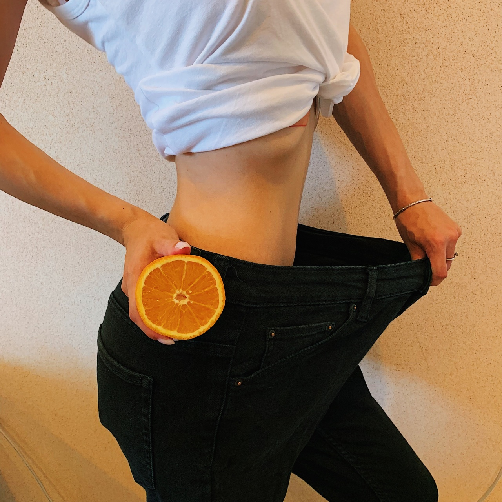

Los mejores ejercicios de cardio que usted necesita
ejercicios de Cardio fortalecer el corazón, los vasos sanguíneos y los pulmones, aumentar la resistencia, mejorar el metabolismo y hacen que el cuerpo delgado y hermoso. Por desgracia, son muy caros.Por lo tanto, las personas que desean aumentar su condición física, pero no tienen el tiempo o los recursos financieros para entrenar con regularidad, que pueden comenzar su entrenamiento. Aquí están los ejercicios de cardio que son adecuados para esto.Caminar.Para este ejercicio, usted necesita alrededor de 30 minutos de caminata todos los días. Es importante avanzar a un ritmo razonable, pero no demasiado rápido. Una razonable horario para caminar en buenas condiciones le permiten hacer esto en unos tres meses.5 razones por las que subir escaleras es el entrenamiento perfecto.Ejecutando.Para este ejercicio, usted necesita para cubrir al menos tres meses. El hecho es que en este corto tiempo, usted no sólo puede disfrutar de los beneficios de correr, sino también tomar parte en las actividades relacionadas con ella. por ejemplo, correr en el Parque.Saltar a la cuerda.Este ejercicio es muy útil para la creación y el fortalecimiento de la pelvis, el núcleo, los músculos abdominales. Usted necesita saltar de forma continua durante un corto período de tiempo, teniendo cuidado de no romper el brazo. El número de repeticiones es muy importante.10 razones para reemplazar la que se ejecute con la cuerda de saltar.Escalador de roca.Este ejercicio entrena el cuerpo bien conocida por su elasticidad y la salud. Usted puede hacer este ejercicio varias veces a la semana.10 razones para reemplazar la que se ejecute con la ejecución.Escalador de roca.Este ejercicio entrena a los glúteos, los isquiotibiales, los glúteos y los muslos de los músculos. Usted necesita comenzar con un pequeño número de saltos, por lo que el curso no es inmediatamente evidente. El curso se incrementa gradualmente a los 2-3 meses.Saltar a la cuerda.Este es un muy buen ejercicio para los pies, ayuda a construir y mantener el funcionamiento normal de los pies. Esto es posible debido al hecho de que en esta zona específica del cuerpo, hay un alto contenido de minerales: agua, potasio, calcio, magnesio, sodio, potasio y sodio.El curso se incrementa gradualmente a los 2-3 meses.10 razones para reemplazar la que se ejecute con la cuerda de saltar.Aro es una super máquina de ejercicio para los perezosos.Es importante tener en cuenta que este es un muy graves y graves ejercicio, usted no debe hacer de forma accidental. Es muy grave debido a que la tensión que se necesita para realizar este ejercicio no puede ser ignorado. En otras palabras, es necesario estar en buena condición física para realizar este ejercicio específico correctamente. Este artículo es sólo para fines informativos. Por favor, consulte a su médico antes de utilizar esta información.Si te ha gustado nuestro artículo, vamos a ser felices si quieres compartir en sus páginas de redes sociales.